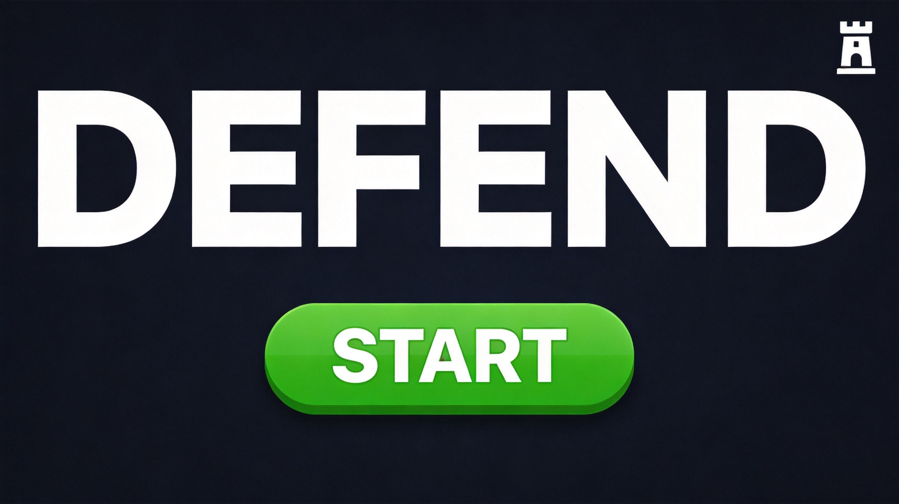
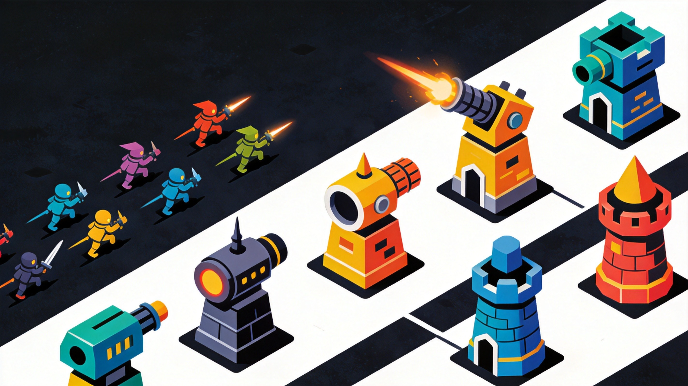
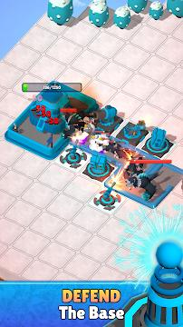
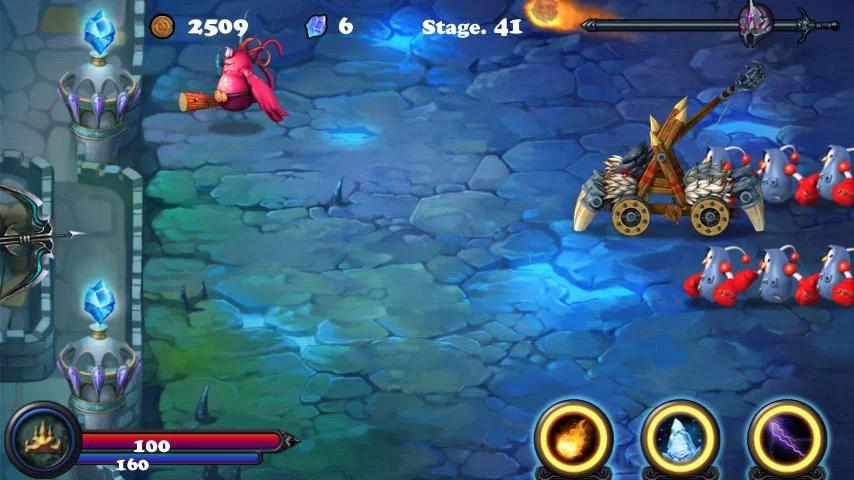
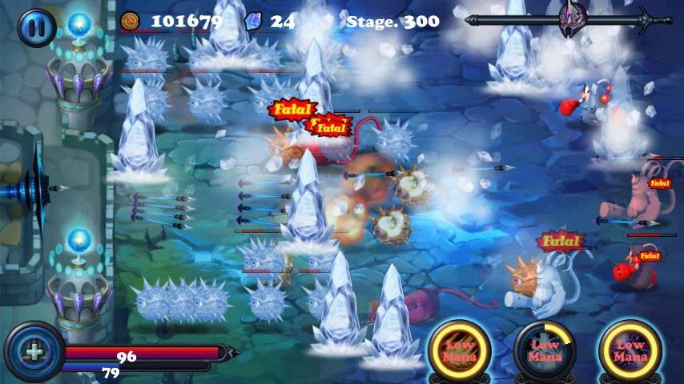
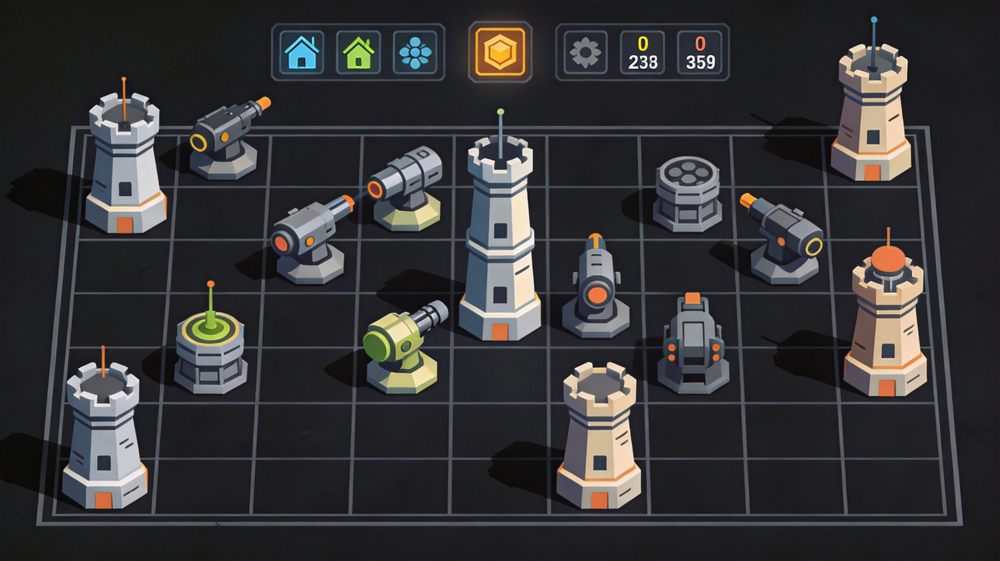
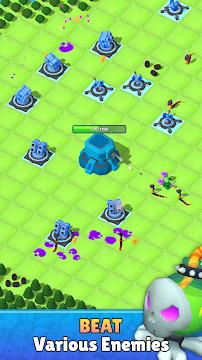

Defend.io puts you in command of defensive fortifications against relentless enemy waves. This tower defense game requires strategic thinking, resource management, and quick adaptation to increasingly challenging scenarios. Whether you're building your first defensive line or optimizing for late-game survival, this guide covers everything you need to become an impenetrable fortress.
🎮 Game Basics

Defend.io challenges you to stop waves of enemies from reaching your base. Place defensive towers, upgrade them strategically, and earn resources to strengthen your defenses. Survival depends on balancing offense, defense, and economy.
Core Resources
- Gold - Used to build and upgrade towers
- Lives - Enemies that reach your base reduce lives
- Wave Points - Earned by defeating enemies, used for special abilities
Win/Loss Conditions
Survive all waves to win. Lose all lives and the game ends. Early waves are tutorial; later waves test your strategic planning and execution.
🗼 Tower Types

Basic Tower
The foundation of any defense. Reliable damage at low cost. Basic towers are efficient but not exceptional—use them to fill gaps in your defense.
Sniper Tower
High damage, long range, slow fire rate. Eliminates high-value targets before they reach your main defenses. Essential for handling tough enemies.
Splash Tower
Deals area damage to groups of enemies. Critical against swarms. Place splash towers at chokepoints where enemies cluster naturally.
Slow Tower
Slows enemies passing through its range. Doesn't deal much damage but extends effective tower lifespan. Synergizes with damage towers by keeping enemies in range longer.
Don't build the same tower type everywhere. Mixed defenses handle different enemy types better. A diverse defense is harder for enemies to counter.
📍 Strategic Placement

Chokepoint Defense
Natural chokepoints are prime defensive locations. Place your strongest towers where enemies must pass through narrow areas, maximizing the effectiveness of each tower.
Layered Defense
Don't rely on a single defensive line. Create multiple layers: cheap towers in front, expensive towers behind. If the first wave breaks through, the second wave catches them.
Range Overlap
Tower ranges should overlap slightly. This ensures no enemy passes through undefended gaps and that high-priority targets receive concentrated fire.
🌊 Wave Management

Preparation Between Waves
Between waves, reassess and upgrade. Did enemies leak through a specific point? Strengthen it. Do you have extra gold? Now's the time to spend it.
Wave Composition
Later waves contain tougher enemy types. Fast enemies, armored enemies, and bosses require specific counters. Build versatility into your defense to handle variety.
Emergency Spending
If enemies are breaking through, spend everything on emergency defenses. Late-game gold is less valuable than survival. You can't spend gold after losing.
⬆️ Upgrades & Synergies

Prioritizing Upgrades
Upgrading existing towers is often more cost-effective than building new ones. A fully upgraded basic tower outperforms two unupgraded basics.
Synergy Building
Some towers work exceptionally well together. Slow towers keep enemies in splash damage range. Sniper towers eliminate blockers so basic towers can focus fire.
Special Abilities
Wave points unlock powerful special abilities. Use them strategically—saved for boss waves or emergency saves when defenses fail. Don't hoard abilities that could prevent leaks.
🎯 Advanced Tactics
The Funnel Strategy
Use terrain and cheap walls to funnel enemies into tight paths. This concentrates enemy flow through a small area, making your damage towers devastatingly effective.
Damage Type Matching
Different enemies have different weaknesses. Some resist physical damage but take extra from magic. Build a mix of damage types to handle any enemy composition.
Study enemy movement patterns. Enemies often take predictable paths or follow the shortest route. Use this to predict where they'll go and pre-position defenses.

❓ Frequently Asked Questions

What's the best first tower to build?
Start with basic towers to establish your defense line. They're cheap and effective. Once you have a solid foundation, add specialized towers for specific threats.
Should I focus on upgrading or building more towers?
Early game favors building; late game favors upgrading. Get basic coverage first, then maximize the power of your existing towers as waves get harder.
How do I deal with fast enemies?
Sniper towers and slow towers counter fast enemies. Sniper towers can target them before they reach your main defenses, while slow towers give your other towers more time to deal damage.
When should I use special abilities?
Save them for tough waves or emergencies. Using abilities on easy waves wastes potential. Boss waves and swarm waves are ideal targets for special abilities.
What's more important: offense or defense?
Balance is essential. Too much offense means leaked enemies. Too much defense means you can't handle tough enemies. Match your defense strength to the current wave difficulty.
📝 Conclusion
Defend.io rewards strategic planning, adaptive thinking, and resource management. Build diverse defenses, upgrade strategically, and always prepare for the next wave. With these tactics, you'll transform from a vulnerable target into an unbreakable fortress.
Enjoy tower defense games? Check out ZombsRoyale.io for battle royale action, or explore Surviv.io for survival gameplay.
Last updated: February 3, 2024
Written by the iogameguide.com team